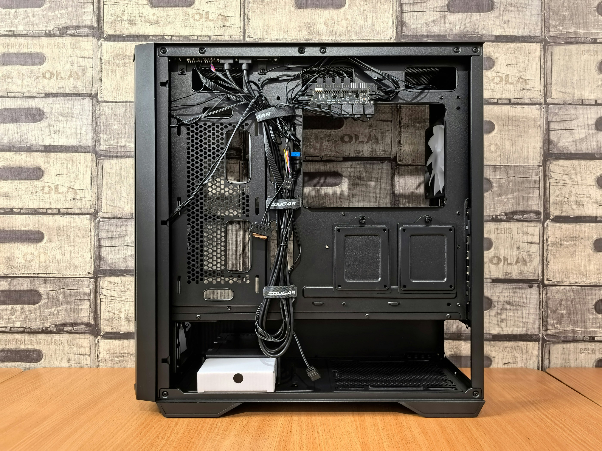
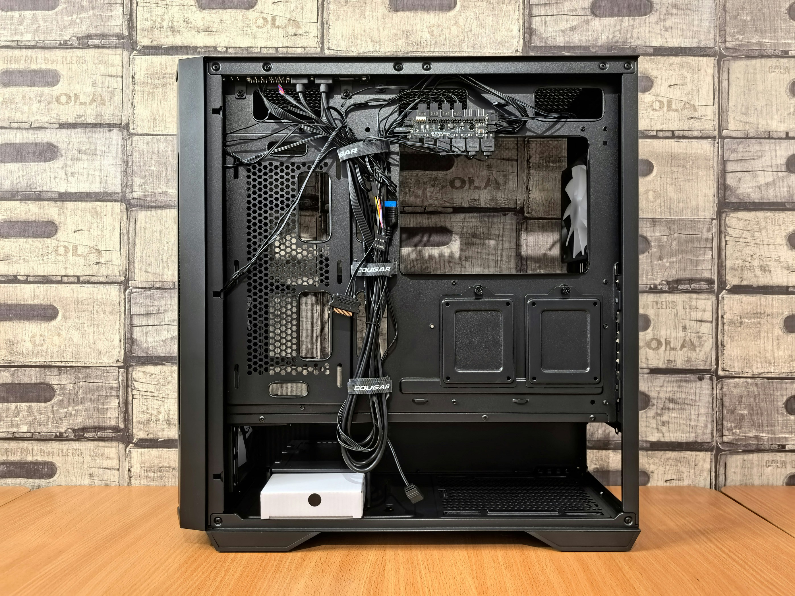

Chassi
Ett datorchassi (även kallat datorlåda, datorkabinett eller - till vardags - datorburk) är ett skal med en stomme där en skrivbordsdators samtliga beståndsdelar är inbyggda, förutom in- och utenheter som bildskärm och tangentbord.
Det finns en mängd standarder, vanligen kallade formfaktorer, för datorchassin, som avgör vilka moderkort och nätdelar som passar i lådan. Formfaktorn är till stor del knuten till vilken storlek datorchassit har. Storlekarna delas först in i liggande eller stående, därefter i höjd. Dessa benämns oftast på engelska. Ska man köpa ett datorchassi är det viktigt att kolla upp både vilket sorts moderkort och nätdel datorchassit ska ha, då dessa inte nödvändigtvis är av samma formfaktor. Man ska tänka också på luftning så att datorn får tillräcklit med luft.
Mini-tower (lilltorn) är den minsta av stående chassin som vanligen är anpassad för mATX eller dylika moderkort. Lägsta höjden på chassit avgörs av vilken formfaktor den är anpassad för och vilken typ av nätdel som sitter i.
Midi-tower (mellantorn) är kanske det vanligaste datorchassit. Den Vanligaste formfaktorn är ATX, även eATX i en del fall.
Full-tower (fulltorn) är den högsta av de alla. Dessa chassin är oftast anpassade för samtliga typer av moderkort, vilket gör att höjden oftast beror hur många enhetsplatser lådan har.
 
